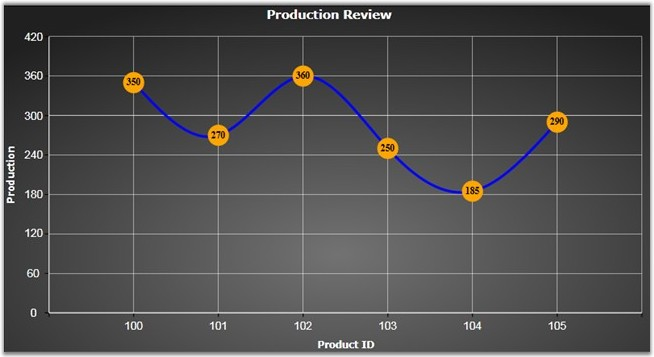

The Chart Adornment Symbol can be customized by setting the Symbol property value to Custom. The SymbolTemplate property is used to write the custom symbol template for the chart adornment. The following code example illustrates how to create custom symbols for adornments.
|
[XAML]
<syncfusion:ChartSeries Type="Spline" Interior="Blue" StrokeThickness="3" Stroke="White" DataSource="{StaticResource data}" BindingPathX="ProductID" BindingPathsY="Produce"> <syncfusion:ChartSeries.AdornmentsInfo> <syncfusion:ChartAdornmentInfo Visible="True" Symbol="Custom" SymbolInterior="Orange" SymbolHeight="25" SymbolWidth="25" LabelContentPath="DataPoint.Y" VerticalAlignment="Center" SegmentLabelFontSize="11" SegmentLabelFontWeight="Bold"> <syncfusion:ChartAdornmentInfo.SymbolTemplate> <DataTemplate> <Ellipse Width="25" Height="25" Fill="Orange"/> </DataTemplate> </syncfusion:ChartAdornmentInfo.SymbolTemplate> </syncfusion:ChartAdornmentInfo> </syncfusion:ChartSeries.AdornmentsInfo> </syncfusion:ChartSeries> |
|
[C#]
// Initialize Adornment. ChartAdornmentInfo adornment = new ChartAdornmentInfo(); adornment.Visible = true;
// Initialize the custom symbol. adornment.Symbol = Symbol.Custom; adornment.SymbolTemplate = this.Resources["symboltemplate"] as DataTemplate; adornment.SymbolInterior = new SolidColorBrush(Colors.Orange); adornment.SymbolWidth = 25; adornment.SymbolHeight = 25;
// Add adornment in the Chart Series. ChartSeries series = new ChartSeries(); series.AdornmentsInfo = adornment; chart.Areas[0].Series.Add(series); |

Figure 70: Custom Adornment Symbol